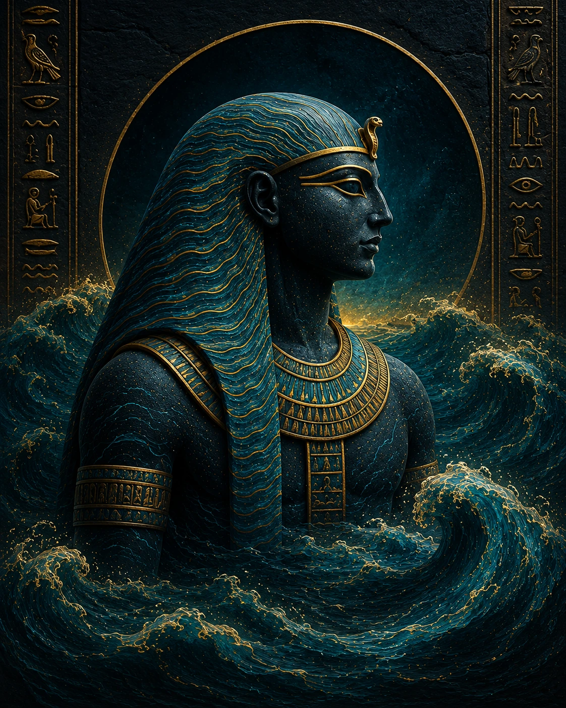

Nun
𓈖𓏌𓈖
Primordial Waters · The Abyss Before Creation
Before existence, before gods and time, there was Nun · the infinite, formless, dark ocean of chaos. Not a villain but a precondition, Nun is the primordial abyss from which all creation emerged. Even after the world was formed, Nun persists beneath it, and the Egyptians believed that at the end of time, the universe would dissolve back into his primordial waters to begin the cycle once more.